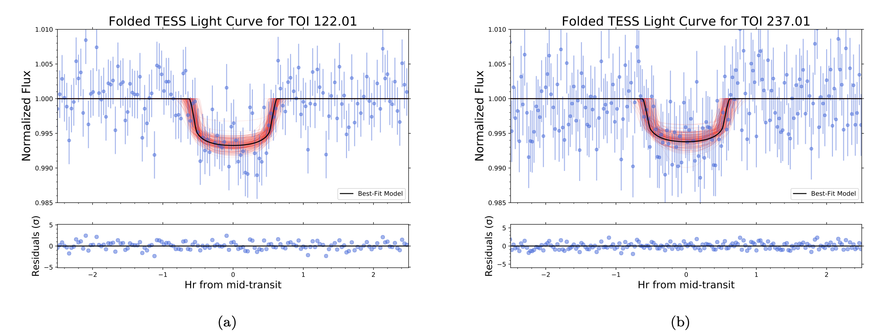
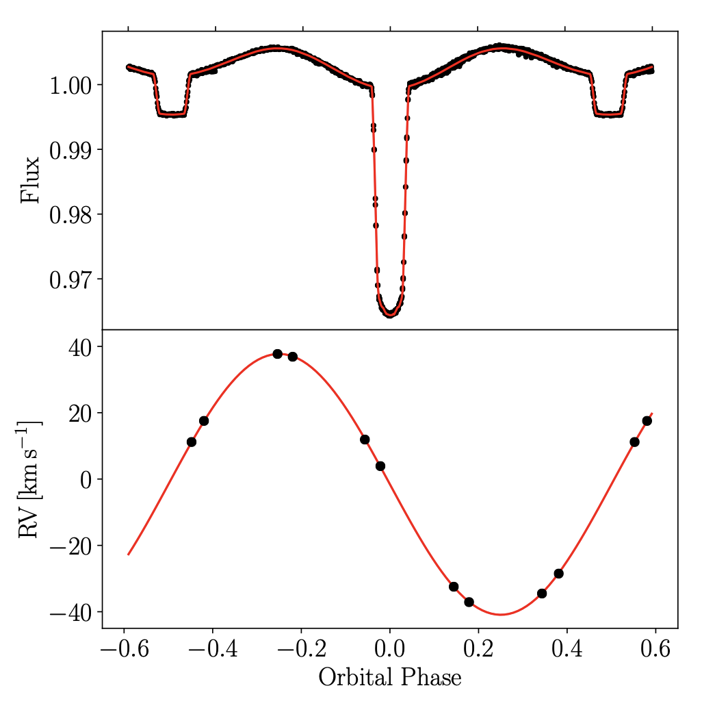

Welcome TESS followers to our weekly news bulletin. This week we have three papers from the archive, enjoy!
Keeping up with the cool stars: One TESS year in the life of AB Doradus (Ioannidis et. al., 2020):
In this paper the authors use TESS to study the photospheric activity of the rapid rotator AB Doradus. TESS has observed almost 600 rotations of this star with a high cadence.
Using TESS data the authors have studied star spots, flares, and determined that the peak-to-peak variation of the rotational modulations reaches almost 11 %. The starspots on AB Doradus were also shown to prefer longitudinal positions.
The authors went on to measure the positions of the active regions on AB Doradus, using spot modeling. They found the the preferred spot configurations should include large regions extending from low to high stellar latitudes. The movement of the spots is therefore thought to be the result of both differential rotation and spot evolution. The average spot lifetime was determined as roughly 10 - 20 days.
TOI 122b and TOI 237b, two small warm planets orbiting inactive M dwarfs, found by TESS (Waalkes et. al., 2020):
The discovery of two warm planets, TOI 122b and TOI 237b, is presented in this paper. These planets transit inactive M dwarfs, and were found using TESS data.
TOI 122b is at a distance of 62pc, has a radius of 2.72 Re, an orbital period of 5.08 days, and receives 8.8 times the Earth's bolometric insolation.
TOI 237b is at a distance of 38 pc, has a radius of 1.44 Re, an orbital period of 5.43 days, and receives 3.7 times the Earth's bolometric insolation.
Given the amount of bolometric insolation, these two planets can be considered as some of the coolest planets discovered by TESS. The planets span the small-planet radius valley and are useful for exploring volatile evolution around M dwarfs.
V772 Cas: an ellipsoidal HgMn star in an eclipsing binary (Kochukhov et. al., 2020):
V772 Cas was thought to be a rare type of magnetic chemically peculiar late B-type star, in an eclipsing binary system. TESS has observed this system and found a clear eclipse with a period of 5.0137 days, accompanied by a significant out-of-eclipse variation of the same period.
Utilizing high-resolution spectroscopy V772 Cas was determined to be an SB1 system, in which its primary star is rotating a factor of two slower than the orbital period, and has chemical peculiarities consistent with a non-magnetic HgMn peculiar star.
Eclipsing HgMn stars are rare, and this one of only three objects known to date. Given its brightness, V772 Cas is a great candidate for detailed followup.
Using both photometry and spectroscopy the authors have performed detailed modeling of the system with the PHOEBE code. From this analysis fundamental parameters were derived and the out-of-eclipse brightness variation can be explained by the ellipsoidal shape of the evolved, asynchronously rotating primary. This variability is the first of its kind in a HgMn star.

Fig 1. Taken from Waalkes et. al., (2020). TESS light curves of the two systems, phase folded across the full 27-day sector to the periods of each of the planets derived in the paper. The authors model this light curves with a 3-parameter MCMC that explores values for transit depth, inclination, and scaled semi-major axis. The best fit model is the black line. The red lines are random samples drawn from the posterior distributions.

Fig 2. Taken from Kochukhov et. al., (2020). The top panel shows the TESS FFI observations (black) and optimized PHOEBE light curve model (red) as a function of the orbital phase. The bottom panel shows the radial velocities derived from HERMES spectra (black) and the optimized PHOEBE radial velocity model (red).